Initial CRYENGINE Setup
Now we have our asset configured correctly, let's move on to the CRYENGINE side of preparing the asset to be used for production. Have an existing level open or create an empty level as the testing area for this asset.
Material
First, open the Material Editor and go to the tutorial_merged_mesh_deform material under:
<>Your_Project>\Assets\Objects\tutorial\vegetation\06\tree\merged_mesh_deform\tutorial_merged_mesh_deform.mtl
If the export process went successful for the material and geometry, you should have the material as shown in the below images. Note the correct folder structure and also the same SubId setup we configured inside 3dsMax. A lot of the fields have been filled out already through the export process (note the Diffuse and Normalmap texture paths already filled in). But there is still a few options that we need to set ourselves.
3dsMax has no concept of a surface type or shader type for example, so we can only define so much with 3dsMax Material Editor.
The rest is completed here in the CRYENGINE's Material Editor.
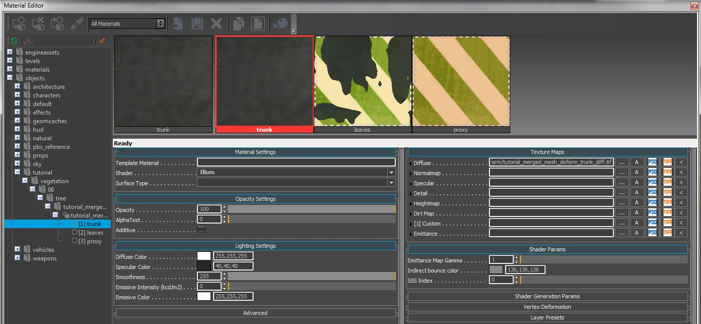
Pic15: Initial Material Editor overview
We will start with Id1 and configure the material settings to make the asset behave correctly for CRYENGINE.
Material Settings Id1 (trunk)
Here we only have to change the Surface Type. Go to Surface Type and select the wood option from the drop down list.
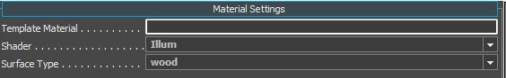
Pic16: Material settings
Lighting
Under the Lighting Settings, we can adjust the color parameters. To be correctly in line with the PBS pipeline, we have to:
- set the Diffuse Color to pure white 255,255,255.
- set the Specular Color within the 40 - 60 range (dark grey).
- set the Smoothness slider to 255 max because we are controlling this value through the normalmap's alpha channel (ddna).
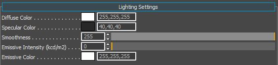
Pic17: Lighting Settings
Texture Maps
The Texture Maps section should already have been filled out with our "Diffuse" (*.diff) and our "Normalmap" (*.ddna).
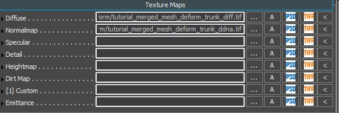
Pic18: Texture maps
Shader Generation Params
This tab in the Material Editor will show you different options depending on the shader type you assign to this material SubId. Since we have selected the Illum shader, it has exposed options exclusive to this shader. To continue, link to this file and add it to the detail texture slot.
<Your_Project>\Assets\textures\detail_bumpmaps\wood\wood_bark_detail.tif>
Please check the box for the Detail mapping param. This allows the usage for the detail map in the texture map slot .
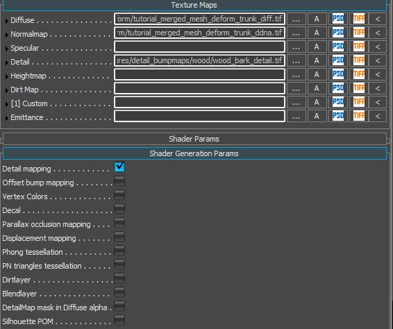
Pic19: Adding the detail map to the material
We use the detail map control the range of additional detail this map layers on top of your other textures.
Shader Params
As you may have noticed, we jumped this section in favor of the Shader Generation Params. We wanted to enable the Detail mapping options first to expose all the parameters that we need to configure the asset correctly. Enabling the Detail mapping parameter has exposed some additional parameters in the Shader Params section. It should now look like this.
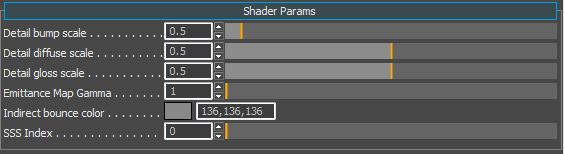
Pic20: Shader Params
| Name | Description |
|---|---|
| Detail bump scale | Intensity of the detail normal map |
| Detail diffuse scale | Intensity of the detail diffuse map |
| Detail gloss scale | Intensity of the detail gloss map |
| Emittance Map Gamma | Keep this at the default value (not required for this tutorial) |
| Indirect bounce color | Keep this at the default value (not required for this tutorial) |
| SSS Index | Keep this at the default value (not required for this tutorial) |
Material Settings Id2 (leaves)
We only have to change 2 settings here the Shader and the Surface Type. The shader we want to use is the Vegetation shader and the surface type is also Vegetation. Select both from the drop down lists.
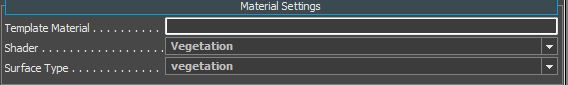
Pic21: Material settings
Lighting
Under the Lighting Settings, we find the color parameters. To be correctly in line with the PBS pipeline, we have to:
- set our Diffuse Color to pure white 255,255,255.
- set the Specular Color within the 40 - 60 range (dark grey).
- set the Smoothness slider to 255 max because we are controlling this value through the normalmap's alpha channel (ddna).
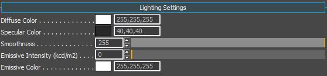
Pic22: Lighting Settings
Texture Maps
The Texture Maps section should already have been filled out with our "Diffuse" (*.diff) and our "Normalmap" (*.ddna).
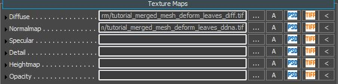
Pic23: Texture maps
Shader Generation Params
This tab in the Material Editor will show you different options depending on the shader type you assign to this material SubId. Since we have selected the vegetation shader, it has exposed the options that apply to the vegetation. To continue, check the box for the Leaves param. We want our asset to run through the higher quality pipeline.
Note that the Leaves parameter forces the material to be two-sided.
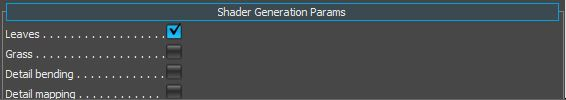
Pic24: Shader Generation Params
| Name | Description |
|---|---|
| Leaves | Uses a higher quality rendering pass on the asset. |
| Grass | Uses a cheaper & faster rendering pass on the asset. |
| Detail bending | Used for adding some random noise into the leaves movement (not required for this tutorial). |
| Detail mapping | Used for adding a detail map into the asset (not required for this tutorial). |
| Blend layer | Used for blending a second set of Diffuse and Normalmap textures (not required for this tutorial). |
| Displacement mapping | This is for applying tessellation to the asset (not required for this tutorial). |
| Phong tessellation | This is for applying tessellation to the asset (not required for this tutorial). |
| PN triangles tessellation | This is for applying tessellation to the asset (not required for this tutorial). |
Shader Params
As you may have noticed, we jumped to this section in favor of the Shader Generation Params. We wanted to enable the Leaves options first to expose all the parameters that we need to configure the asset correctly. Enabling the Leaves parameter has exposed some additional parameters in the Shader Params section. It should now look like this.
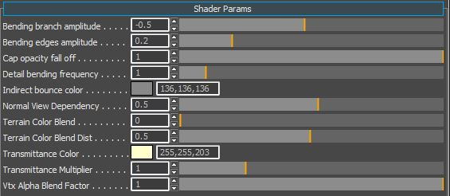
Pic25: Shader Params
| Name | Description |
|---|---|
| Bending branch amplitude | Detail bending control. Please see this page for information on detail bending (not required for this tutorial). |
| Bending edges amplitude | Detail bending control. Please see this page for information on detail bending (not required for this tutorial). |
| Cap opacity fall off | Controls how strongly vegetation polygons fade out when looking at them at a steep angle. This helps to disguise the plane shape of vegetation geometry. |
| Detail bending frequency | Detail bending control. Please see this page for information on detail bending (not required for this tutorial). |
| Indirect bounce color | Keep this at the default value |
| Normal View Dependency | This value orients the normals towards the player and is useful for planes |
| Terrain Color Blend | If you enable "UseTerrainColor" in the Vegetation tool for the object, this will absorb some of the color information of the underlying terrain where the vegetation object has been placed. This nice feature helps distant vegetation objects blend into the scene at distance |
| Terrain Color Blend Dist | This slider controls how close to the camera the 'absorption' of the terrain color will happen |
| Transmittance Color | This color is what you would get if you were to shine a light through the leaf and look at it from the other side. |
| Transmittance Multiplier | Controls how strong the translucency effect will be |
| Vtx Alpha Blend Factor | Used for faking AO. You can control the strength of the blend effect with this slider. Technically we don't need to use this because of technology such as SSDO, SSAO and SVOGI, but sometimes it can help the asset by using this. |
In addition to the extra parameters exposed in the Shader Params section, it has also added a new texture map slot for the Opacity. Please link to this file and add it to the material.
<Your_Project>\Assets\objects\tutorial\vegetation\06\tree\tutorial_merged_mesh_deform\tutorial_merged_mesh_deform_leaves_sss.tif>
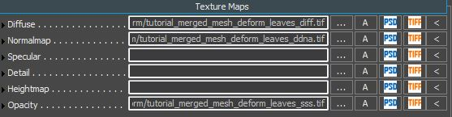
Pic26: Adding the SSS map to the material
We use the opacity map to control where the translucency effect (light passing through the surface) appears on the asset. This opacity map is a grey scale image that defines the foliage thickness and how much light can pass through from the backside.
Material Settings Id3 (proxy)
Id3 was setup to be the collision proxy. This material needs minor adjustments to be set correctly.
- Change the "Shader" to "Nodraw" (because this geometry is not to be shown, it's an invisible trigger).
- Change the surface type to vegetation.
There is nothing more to set on the proxy material.
Save the material
Within the Material Editor, on the top toolbar, click the Save icon.

Pic27: Saving the material changes
Vegetation Editor
We will not go into an in-depth tutorial of the Vegetation Editor here. For more information of the usage of the Vegetation Editor, please see
Go to the Tools menu, and then select the Vegetation Editor.

Pic28: Selecting the Vegetation Editor.
Click Add Group icon to add a new Vegetation Group and call it something appropriate (like "trees").
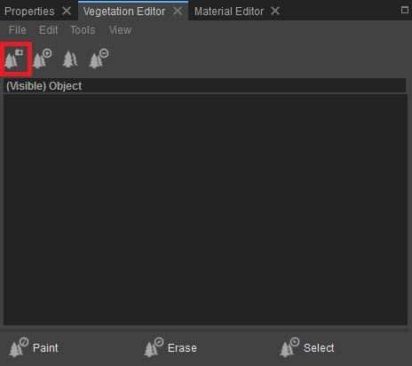
Pic29: Adding a Vegetation group
Click the Add Object icon to add a vegetation object to this group.

Pic30: Adding a vegetation object to the group.
In the browse dialog, go to your folder where you saved the asset and select the tree
<bjects\tutorial\vegetation\06\tree\merged_mesh_deform\tutorial_merged_mesh_deform>Your_Project>\Assets\O
Now highlight the object that you just added to the category to select it:
- Enable the paint objects button to paint down lots of instances your willow tree asset, or
- To be more precise, don't select the paint objects button (so it's not active) and on the terrain Shift+LMB to place only 1 instance.
Jump In-Game (CTRL+G) to Test
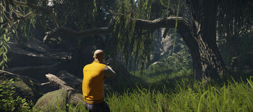
Pic31: Level Woodland, with our willow tree added at the start and the player interacting with the bendable parts
Note: Don't forget to activate the Wind vector and Breeze generation in the Environment bar to get some general movement